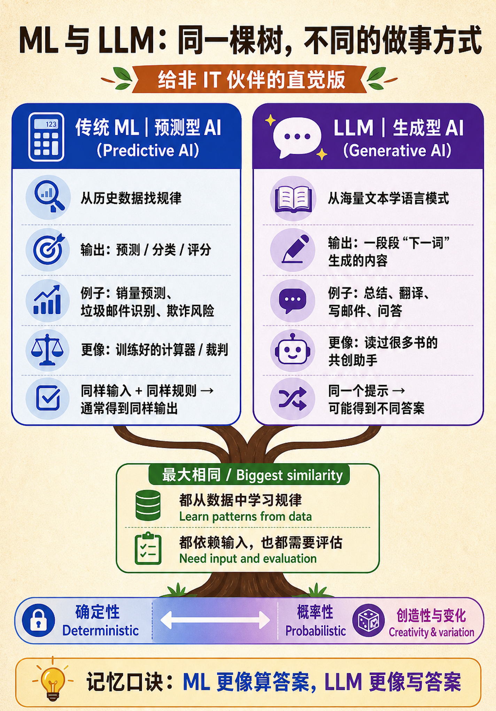
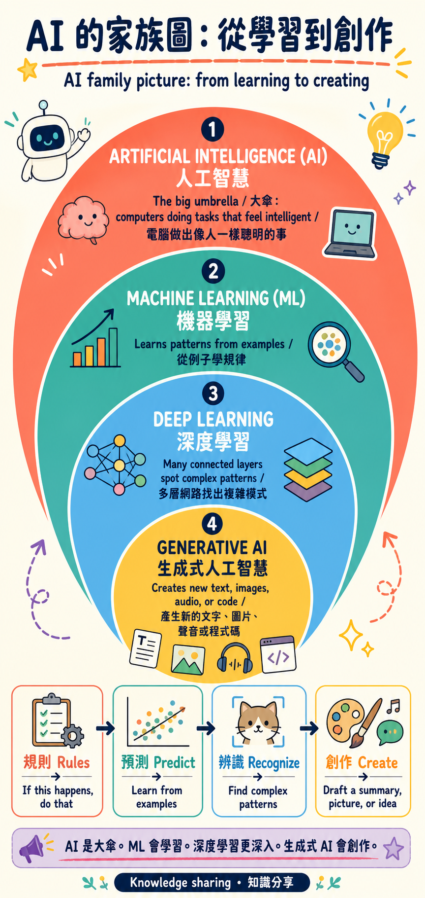

01
預測診所下週會有多忙
中醫診所記錄每天的預約人數、初診和複診比例、星期幾及節日前後的看診量。診所希望提前知道下週哪幾天會特別忙，好安排醫生和櫃檯人員。問題：主要任務是根據過去資料預測人數，應該選哪一種？
答案：ML。因為重點是根據過去的預約資料預測未來的看診人數。ML 像一個會從很多例子中找規律的預測工具；它可以幫助診所安排人手，但不需要自己寫一段說明。

複習重點：ML 偏向預測，GenAI 偏向生成與解釋。簡單判斷：ML 用來從資料中找規律、做預測；GenAI 用來生成文字、總結或解釋；如果一個負責預測，另一個負責說明或建議，就是 Hybrid（混合使用）。
中醫診所記錄每天的預約人數、初診和複診比例、星期幾及節日前後的看診量。診所希望提前知道下週哪幾天會特別忙，好安排醫生和櫃檯人員。問題：主要任務是根據過去資料預測人數，應該選哪一種？

複習重點：ML 偏向預測，GenAI 偏向生成與解釋。第一次到中醫診所的患者想知道掛號、問診、量血壓、看舌象、取藥和複診分別是什麼。診所希望自動生成一段親切、容易看懂的說明。問題：主要任務是寫出適合患者閱讀的文字，應該選哪一種？

複習重點：AI 是大範圍概念，ML 是其中一種會從例子學習的方法，GenAI 專注於創作內容。診所想根據患者過去的預約情況和看診記錄，提醒櫃檯人員哪些患者可能需要複診；同時自動生成一則禮貌的簡訊草稿，交由工作人員確認後發送。問題：同時需要找規律和寫簡訊，應該選哪一種？
請想一想：輸入是什麼？希望得到什麼結果？是否需要人工審核？再說明為什麼另外兩種工具不如你的選擇合適。